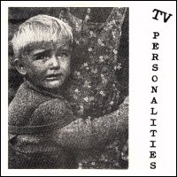

Television Personalities |
 1995 - Little Teddy - LITE716 - 7" Songs: Time Goes Slowly When You're Drowning Meanwhile In A Luxury Dockland Home Songs by Daniel Treacy. Published by Stardust Music. Performed by Daniel Treacy, Jefferey Bloom, Jowe Head. Recorded at Toe Rag Studios. Engineered by Liam Watson. |